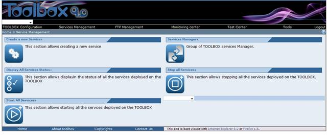
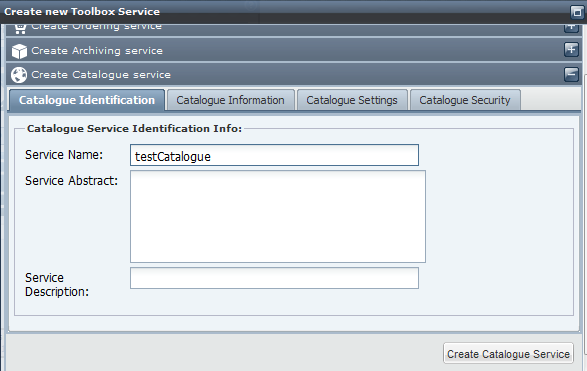
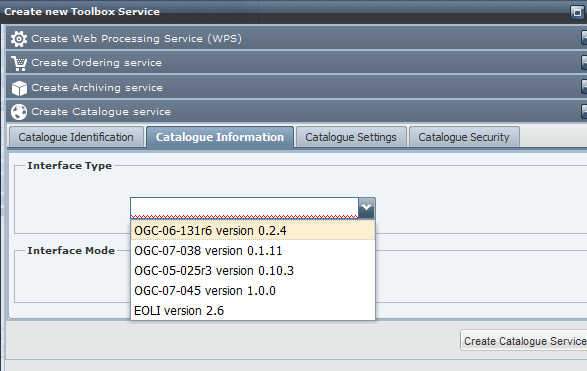
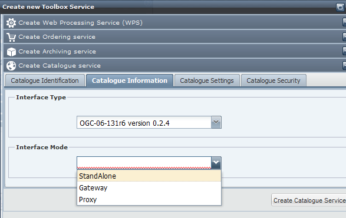
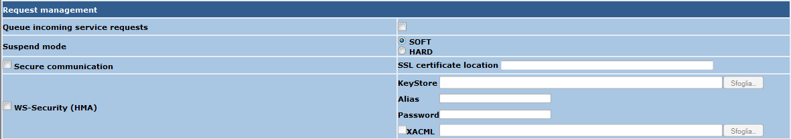

A proxy service can be used in front of an existing Catalogue service typically to add a security layer and protect the original service.
To create a new Catalogue proxy service follow these steps.
Perform the login procedure.
A proxy service can be used in front of an existing Catalogue service typically to add a security layer and protect the original service.
To create a new Catalogue proxy service follow these steps.
Perform the login procedure.
Click on the Service management link in the toolbar. The browser should display

Click on the "Create a new Service" section link. The following page should be displayed

select the "Create Catalogue Service" option and fill the Service Info tab using a unique Service Name. This is the name of the service that will be used to create the WSDL file. Enter also an abstract and a Description of the service.
Select the Catalogue Information tab and select the Interface Type

The Interface Mode content will depend on the type of interface you have selected

Select the Gateway (for some interaces you could find Standard instead of Gateway)Interface Mode, then click on the Create Catalogue Service Button. The Browser should now display a successful message. Click on OK. The browser now should provide a list of all the schema associated to this service and some additional parameters to be set.

In the following a description of the "Service information" section
Then click on Configure. A summary of all the selected options is now displayed but the service is created without operations. To add an operation follow the steps descrbed here.